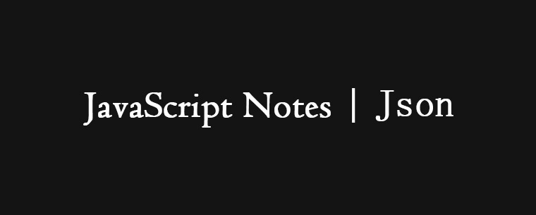

- json(javascript object notaion)全称是javascript对象表示法,它是一种数据交换的文本格式,而不是一种数据交换的文本格式,而不是一种编程语言,用于读取结构化数据,JSON是设计成描述数据交换格式的，他也有自己的语法，这个语法是JavaScript的一个子集。
一. 语法规则
- JSON的语法可以表示以下三种类型的值。字符串,数值,布尔值,和null
- 字符串必须使用双引号表示,不能使用单引号,数值必须使用十进制,且不能使用NaN和Infinity
- JSON不支持javascript中的特殊值undefined
二. JSON与对象,数组的区别
- 对象和数组都是作为一种复杂数据类型,表示的是一组有序的键值对儿
- 对象的每个键值对儿中的值可以是简单值,也可以是复杂数据类型的值
- 数组表示一组有序的值的列表可以通过数值索引来访问其中的值,数组的值可以是任意类型 – 简单值,对象,或数组
- 注意:数组或对象最后一个成员的后面,不能加逗号.
- JSON不支持JavaScript中的特殊值undefined
- JSON没有变量的概念
- JSON中,对象的键名必须放在双引号里面
- 因为JSON不是JavaScript语句,所以没有末尾的分号
三.JSON对象stringify()方法
3-1. JSON.stringify();
把javascript对象序列化123456789101112131415161718192021222324252627282930313233343536373839404142var jsonobj = {"title":"javascript","group":{"name":"jia","tel":12345}};var jsonstringify = JSON.stringify(jsonobj);//{"title":"javascript","group":{"name":"jia","tel":12345}}如果对象的成员是undefined或函数，这个成员会被省略如果数组的成员是undefined或函数，则这些值被转成nullJSON.stringify({a: function(){},b: undefined,c: [ function(){}, undefined ]});// "{"c":[null,null]}"stringify()方法把正则表达式和数学对象转换成空对象的字符串形式JSON.stringify(/foo/) // "{}"JSON.stringify(Math) // "{}"stringify()方法把日期对象和包装对象转换成字符串JSON.stringify(new Boolean(true)) //"true"JSON.stringify(new String('123')) //""123""JSON.stringify(new Number(1)) //"1"JSON.stringify(new Date()) //""2016-09-20T02:26:38.294Z""JSON.stringify()方法会忽略对象的不可遍历属性var obj = {};Object.defineProperties(obj, {'foo': {value: 1,enumerable: true},'bar': {value: 2,enumerable: false}});JSON.stringify(obj); // {"foo":1}]
3-2. 参数
- JSON.stringify()除序列化的javascript对象外,还可以接受两个参数,这两个参数用于指定以不同的方式序列化JavaScript对象.
- 第一个参数是一个过滤器,可以是一个数组,也可以是一个函数
- 第二个参数是一个选项,在JSON字符串中保留缩进
当stringify()方法的第二个参数是一个数组时,这时相当于实现一个过滤器的功能
过滤器只对对象的第一层属性有效1234567var jsonObj = {"title":"javascript","group":{"a":1}};JSON.stringify(jsonObj,["group","a"]) // {"group":{"a":1}}过滤器对数组无效
12var jsonObj =[1,2];JSON.stringify(jsonObj,["0"])//"[1,2]"stringify()方法的第二个参数也可以是一个函数。
传入的函数接收两个参数，属性(键)名和属性值1234567JSON.stringify({a:1,b:2},function(key, value){if (typeof value === "number") {value = 2 * value;}return value;});// "{"a":2,"b":4}"注意:属性名只能是字符串，而在值并非键值对儿结构的值时，键名可以是空字符串
- stringify()方法还可以接受第三个参数，用于增加返回的JSON字符串的可读性
- 如果是数字，表示每个属性前面添加的空格(最多不超过10个)
如果是字符串(不超过10个字符)，则该字符串会添加在每行前面
12345JSON.stringify({ p1:1, p2:2 }, null, '|-');返回:"{|-"p1": 1,|-"p2": 2}"toJSON();JSON.stringify()还是不能满足对某些对象进行自定义序列化的需求。在这些情况下,可以通过对象上调用toJSON()方法,返回其自身的JSON数据格式
12345678var o = {foo: 'foo',toJSON: function() {return 'bar';}};JSON.stringify({x: o});// '{"x":"bar"}'
四.JSON对象的parse()方法。
- JSON.parse方法用于将JSON字符串转化成对象
- 如果传入的字符串不是有效的JSON格式，JSON.parse方法将报错
- JSON.parse()方法也可以接收一个函数参数，在每个键值对儿上调用，这个函数被称为还原函数(reviver)。该函数接收两个参数，一个键和一个值，返回一个值1234567891011121314151617181920212223242526272829如果还原函数返回undefined，则表示要从结果中删除相应的键；如果返回其他值，则将该值插入到结果中var o = JSON.parse('{"a":1,"b":2}',function(key, value) {if (key === ''){return value;}if (key === 'a') {return value + 10;}});o.a // 11o.b // undefined在将日期字符串转换为Date对象时，经常要用到还原函数var book = {"title": "javascript","date": new Date(2016,9,1)}var jsonStr = JSON.stringify(book);//'{"title":"javascript","date":"2016-09-30T16:00:00.000Z"}''console.log(jsonStr)var bookCopy = JSON.parse(jsonStr,function(key,value){if(key == 'date'){return new Date(value);}return value;})console.log(bookCopy.date.getFullYear());//2016
|
|